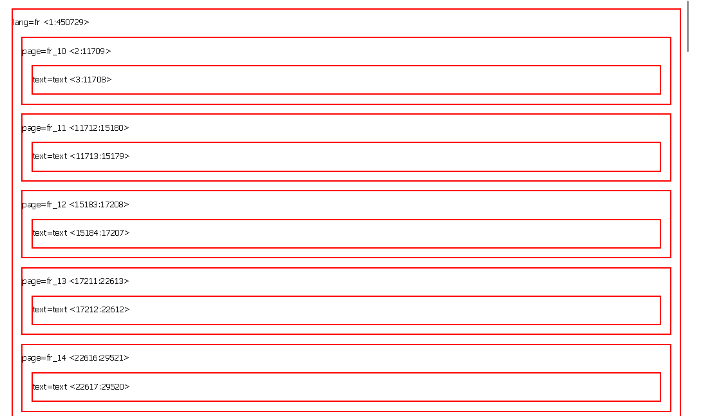

Analyses iTrameur en PDF
Ci-dessous, vous trouverez 3 boutons qui vous enverront vers l'analyse en format PDF du français, espagnol, et polonais
Analyse en Français
I. Introduction
Dans l’univers infini qui constitue le langage, le mot "bonheur" émerge comme une entité complexe, englobant une multitude d’émotions et de perceptions. Grâce au logiciel iTrameur (https://itrameur.clillac-arp.univ-paris-diderot.fr/ ), nous avons l’opportunité d’explorer ce mot dans la langue française. Pour cela, nous allons tenter de comprendre les différentes nuances de ce mot, mais aussi comment il se tisse dans notre quotidien. En effet, nous avons décidé de travailler sur des forums en ligne afin d’avoir un corpus qui est enrichi par la vision des gens. Les forums en ligne sont un endroit idéal pour que les gens s'expriment librement et comment ils échangent avec les autres utilisateurs. En nous plongeant dans les différentes discussions, nous allons pouvoir explorer les diverses perspectives qui convergent au sein de notre société : la recherche du bonheur. Ainsi, nous allons tenter de comprendre comment le "bonheur" se manifeste dans le langage.
II. Analyse
A) Vérification de notre corpus
Avant de commencer notre analyse, nous devons voir si notre script a bien fonctionné, c’est-à-dire mettre les balises correspondantes avec le délimiteur de section. Notre fichier contexte et dumps-text doit avoir ce format :
< lang="fr"> < page="fr_1"> < text>Ici, le contenu du fichier fr_1,< /text> < /page> § < page="fr_2"> < text>Là, le contenu du fichier fr_2< /text> < /page> § < /lang>"
Lorsqu’on charge notre corpus, nous pouvons voir que le logiciel iTrameur a bien segmenté notre fichier et il a bien délimité tous nos fichiers. Nous pouvons voir ces carrés qui apparaissent pour voir les différentes pages de notre corpus.

Ensuite, nous pouvons voir si chaque carré a bien du texte à l’intérieur. Pour cela, nous devons vérifier si dans chaque carré nous avons notre texte/body de chaque lien.
En cliquant sur nos carrés, nous pouvons voir qu’il y a bien du contenu textuel à l’intérieur de chaque balise < page>< /page>. En effet, cette étape est très importante car cela nous permet de faire une analyse concrète et non biaisée avec du contenu qui s’affiche mal.
Ensuite, nous pouvons voir dans l’onglet "Cadre", puis dans l’option "Cadre" l’arborescence de notre fichier.
Nous pouvons voir que notre arborescence dans le fichier est correcte et que dans la balise langue nous avons toutes nos pages, et dans chaque page nous avons notre texte.
Lorsque nous avons exécuter notre script pour iTrameur, nous avons rencontré des difficultés au niveau des balises et au niveau du contenu. Par exemple, nous avons remarqué que la première page était bien < page=”fr_1”>, mais ce n’était pas le contenu de fr_1 mais de fr_10. Nous avons pu modifier cela, en mettant bien le contenant pour chaque lien , mais cela à mis pages dans le désordre. Nous pouvons le voir parce que le premier fichier de page est bien fr_10.
B) Dictionnaire
Après notre vérification de corpus terminée, nous avons décidé de nous diriger dans l’onglet "Trame", puis dans "Dictionnaire".
Le dictionnaire va nous permettre d’afficher toutes les formes de notre mot selon la fréquence : du plus fréquent au moins fréquent.
Avec l’option du dictionnaire, il est possible de projeter chaque item sur :
- la concordance
- la ventilation
- la carte des sections
- la sélection

Dans notre corpus, nous pouvons voir que le mot “bonheur” apparaît de plusieurs manière : au singulier et au pluriel, mais aussi en majuscule et en minuscule.
Nous pouvons justifier ces différentes formes par le fait que ce soit un corpus venant de forums en ligne, donc les utilisateurs écrivent de la manière qu'ils souhaitent. Par exemple, nous pouvons voir la forme "bOnHeUr" ou encore ">bonheur". Ce sont des facteurs qu’il faut prendre en compte parce que gens sont libres d’écrire ce qu'ils veulent et comment ils veulent avec le clavier : avec des fautes de frappe ou d’orthographes.
Mais aussi, nous allons nous concentrer sur le mot "bonheur" écrit en minuscule et singulier parce qu' il apparaît 1130 fois. Mais aussi, "Bonheur" apparaît 74 fois mais à l’aide de notre concordancier développé sur notre site, nous avons vu que ce sont des occurrences qui apparaissent au titre de notre forum, tels que : "#La perte du Bonheur" ou encore "#Discussion: Bonheur".
C) Ventilation
Nous allons nous intéresser à l’onglet "Cadre", puis dans l’option "Ventilation". La ventilation nous permet d’avoir trois graphiques. Le premier graphique (en haut) est réalisé en fonction de la fréquence absolue du pôle recherché. Ce graphique sera très intéressant pour notre analyse parce que il est réalisé en fonction du nombre d’occurrences de notre forme du mot dans le corpus. Nous avons décidé de choisir la partition pages dans les paramètres mais il est possible de faire la partition sur d’autres facteurs. La partition selon les pages va nous permettre de d’avoir en vu toutes les pages sur l’axe horizontal. Mais aussi, nous allons voir combien de fois notre page contient le mot "bonheur".
Dans le premier graphique nous pouvons voir qu’il y des différences au niveau de l’apparition de notre mot.

Par exemple, dans la page fr_8, nous avons 74 occurrences, dans fr_26 nous avons 71 occurrences, et dans fr_1 on en a 60.Nous pouvons donc voir que dans notre corpus, nous avons des pages qui ont généré beaucoup de discussion entre les utilisateurs car le nombre d'occurrences apparaît beaucoup de fois.
Au milieu, nous avons la fréquence relative, mais notre graphique ressemblait à celui de l’absolue donc dans notre analyse cela ne semblait pas intéressant car nous voulions expliquer de nouvelle chose et non nous répéter.
Pour finir, nous avons le graphique de spécificité qui nous permet d'analyser la spécificité d'apparition d'un événement textuel dans une partie d'un corpus plutôt qu'une autre.
Nous pouvons voir que les pages que nous citons auparavant sont incluses dans les indices positifs et non dans le négatif. Nous pouvons observer que les pics les plus hauts deviennent positifs et les pages qui ont moins d’occurrences sont négatives.
D) Cooccurrents
Dans cette partie nous allons dans l’onglet "Coocs", puis dans "Cooccurrents". L'onglet "Coocs" va nous permettre de rechercher les cooccurrents de notre mot, entré dans les paramètres en cliquant sur le bouton "cooccurrents*". Le calcul de cooccurrence est réalisé en prenant en compte les cooccurrents dont l'indice de spécificité est supérieur à la valeur, c’est-à-dire dans nos graphiques.
En traitement automatique du langage, l'analyse de la cooccurrence peut être utilisée pour extraire des relations sémantiques entre des mots et en examinant les patterns dans lesquels ils se trouvent. Ainsi, cela peut nous permettre de comprendre les associations et les liens entre le mot choisi.
Tout d’abord, nous allons voir les mots qui apparaissent le plus souvent près du mot "bonheur". Pour cela, nous avons pris des captures de la table en nous concentrant sur les différentes fréquences mais aussi sur l’indice de spécificité qui est supérieur.

Tout d’abord, le premier mot qui a retenu notre intention est "Dents". Au début, nous nous sommes demandé pourquoi le mot "dent" avait un indice de spécificité important pour être placé dans les mots les plus importants. Nous avons donc cliquer sur ce mot pour avoir le contenu des phrases.Lorsqu’on clique dent :

Lorsque l’on pense au mot "bonheur" on peut ne pas penser au mot “dent” mais en remarquant les phrases on comprend mieux pourquoi "dents" est placé dans ce tableau. Nous pouvons voir que "dents" fait référence au dent de bonheur, et les utilisateurs demandent des renseignements ou expriment leur point de vue/ expérience sur les dents du bonheur. Le mot “bonheur” peut donc faire partie d’un champ lexical médical car les personnes peuvent l’utiliser dans un contexte particulier, comme la santé.
Ensuite, nous pouvons voir que les premier résultats sont des déterminants ou bien des prépositions, mais cela est tout à fait normal dans la langue française. Ensuite, nous pouvons voir "quoi" et "atteindre". Nous pouvons voir que ces deux apparaissent le plus souvent parce que lorsqu’on regarde leur contexte d’apparition leurs résultats sont intéressants.

Nous pouvons voir que "quoi" et "atteindre" sont souvent utilisés dans des phrases interrogatives parce que les gens se demandent qu'est-ce que le bonheur et comment on peut l’atteindre. Mais aussi, dans les résultats on veut que c’est un état qui est mesurable. Les utilisateurs utilisent souvent des échelles sur la satisfaction de leur vie ou bien des questionnaires sur le bonheur. Ces mesures visent à évaluer la façon dont les individus évaluent leur propre bonheur et satisfaction dans la vie.
Par ailleurs, le verbe être "est" apparaît avant car les gens communiquent en définissant pour eux ce que c’est le bonheur. Ce schéma ressemble à un cycle parce que les gens se demandent ce qu'est le bonheur, comment l’atteindre ou encore comment peut-on le mesurer. Mais aussi, après avoir écrit les questions sur les forums, les autres peuvent définir ce qu’est pour eux le bonheur.

Ensuite, nous pouvons trouver une liste de mots qui correspond à un champ lexical de l'exploration et de la quête, tels que : "recherche", "conception", "ultime", "notion", "quête", "perception", "propre" etc… Mais aussi, un champ lexical plutôt négatif avec "argent", "égoïste" ou encore "tabou".
Ainsi, nous pouvons voir que le bonheur est un terme riche sémantiquement car il englobe une gamme complexe de mots. Pour certain elle peut représenter une moment de satisfaction mais pour d’autre c’est bien plus. Ce mot incarne une quête constante et prend en compte plusieurs facteurs dans la vie humaine. Cela passe par un sentiment individuel de bien être, à la recherche d’accomplissement. Sa polysémie se manifeste à travers la diversité des expériences humaines qui contribuent à la recherche de cet état. Ainsi, explorer ces nuances nous ont permis de montrer les multiples facettes de ce mot et de voir qu’il contient une richesse lexicale et une complexité à cause de l’expérience des individus.
E) Spécifs-totales* et Spécifs-partie*
Pour finir, cette analyse nous avons voulu voir l’onglet "Cadre" et les options "Spécifs-totales*" et "Spécifs-partie*".

Ces deux options nous permettent de confirmer nos hypothèses du début de notre analyse. Le mot "bonheur" est utilisé : "bonheur", "Bonheur" ou bien "bonheurs". Les autres configurations que nous avons vu correspondent surement au faute de frappe ou bien au choix de l’utilisateur.